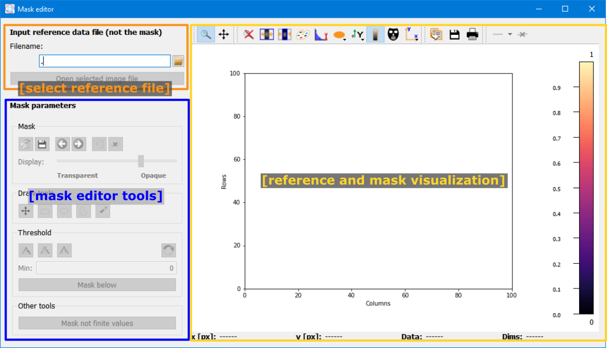
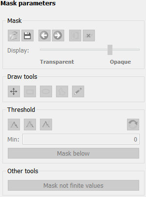
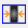
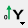

Mask editor window#
The mask editor window allows to create or edit a mask with drawing tools or threshold values.
The main elements in the Mask editor window are

Reference file selection:
Loading or editing a mask first requires a reference data file to be imported. Use the Filename Parameter to select a file and the
Open selected image filebutton to import the selected file.Mask editor tools:
These tools allow to modify the mask and will be explained in detail below.
Reference and mask visualization:
This widget allows to view the reference data file in the selected colormap. The mask will also be shown in a color which is complementary to the selected colormap.
Mask editor tools#
The mask editor tools are a silx MaskToolsWidget and can be used to modify the mask. The individual control elements are listed below.
Mask#
The Mask box includes the following control elements (listed from left to right):

|
Load mask |
Load a mask from a file. |

|
Save mask |
Save the current mask to file as binary image. |

|
Undo |
Undo the last change to the mask. (Shortcut: |

|
Redo |
Redo the last change to the mask. (Shortcut: |

|
Invert |
Invert the mask and mask all un-masked pixels and vice versa.
(Shortcut |
Clear mask |
Clear the current mask and reset it to an empty mask. (Shortcut:
|
In addition, the Display slider allows to control the transparency of the mask overlay on the reference image.
Draw tools#
The draw tools allow to add or remove regions to/from the mask, based on geometric shapes.

|
Pan |
Pan the image (and mask) in the plot. |
Draw rectangle |
Draw a rectangle to mask/unmask a region. The operation (mask or unmask) is controlled by the radio buttons below the button. |
|

|
Draw ellipse |
Draw an ellipse to mask/unmask a region. The operation (mask or unmask) is controlled by the radio buttons below the button. |

|
Draw polygon |
Draw a polygon to mask/unmask a region. The operation (mask or unmask)
is controlled by the radio buttons below the button. To add points to
the polygon, left-click on the position to add. To close the polygon,
right-click and select Close the polygon. (Shortcut |
Pencil |
Mask or unmask areas with a pencil. The operation (mask or unmask)
is controlled by the radio buttons below the button. The pencil size
can be edited by either entering a number for the Pencil size or using
the slider to modify the number.
(Shortcut |
Threshold#
The threshold group allows to mask pixels based on their value in the reference image.

|
Min threshold |
Mask all pixels with a value below the minimum. Upon selecting this threshold, a field to set the minimum value will be shown. |
Range threshold |
Mask all pixels within the range between min and max. Upon selecting this threshold, a field to set the minimum and maximum values will be shown. |
|

|
Max threshold |
Mask all pixels with a value higher than the max threshold. Upon selecting this threshold, a field to set the maximum value will be shown. |
Get values from colormap |
Get the values for minimum and maximum from the colormap range. |
To apply the selected threshold, simply click the Mask below,
Mask between, or Mask above button, depending on the
selected threshold.
Mask not finite values#
This button will mask all pixels in the image which have not finite values,
i.e. NaN, inf or -inf.
Data display#
Pydidas 2D plot#
The PydidasPlot2d is a
subclassed silx Plot2d
with additional features useful in pydidas.

- The menu
The menu bar allows access to all generic silx and additional pydidas functionality. The detailed menu icons and actions are described below in the menu entries description.
- The image display
This widget shows the image data. Depending on the zoom level, this is either the full image or a sub-region.
- The colorbar
The colorbar shows the reference for the used colormap to map data levels to colors.
- The position information
This widget displays the coordinates and data values of the data under the mouse cursor.
Two-dimensional plots are presented in a silx Plot2D widget. The toolbar options will be explained in detail below. Moving the mouse over the canvas will update the labels for x/y position and data value at the bottom of the canvas. Note that the x and y axis positions for each pixel are defined at the pixel center and the given values must be treated carefully with respect to the pixel shape, especially for coarse pixels.
Tip
The scaling of the results can be achieved by modifying the colormap settings.
menu entries description#
menu icon |
description |
|---|---|

|
Zoom mode: clicking with the mouse and dragging spans a new selection of the data to be visualized. |

|
Panning mode: clicking with the mouse and dragging moves the data on the canvas. |

|
Unzoom: Reset the display region to the full data. |
|  | Match canvas: Set the aspect ratio to 1 and match the canvas size to the data to allow a tight fit. |

|
Expand canvas: Reset the canvas size to take up all available space. This option does also change the data aspect to make use of the full canvas. |

|
Open the colormap editor. This button opens a window with selections for the colormap and scaling of the displayed minimum and maximum values. |

|
Crop histogram outliers: Calculate the histogram of the image and set the colormap to ignore the low x% and the top *y% of the image histogram. The levels of x and y can be adjusted in the pydidas user settings. |

|
Autoscale the colormap to the image mean value +/- 3 standard deviations. |
This action allows to control the aspect of the displayed data and allows to stretch the data to fill the available canvas or keep its original aspect ratio. |
|
|  | Control the position of the origin in the image: Select between the top left and bottom left corner. |
Display or hide the colorbar on the drawing canvas. |
|

|
Mask tools: This button opens an additional widget at the bottom of the canvas with tools for importing or setting a mask to mask certain data regions. |

|
Set coordinate system: This button will open a submenu which allows to
select the coordinate system (cartesian or cylindrical). Note that the
cylindrical coordinate system use the global |

|
Get information for selected datapoint: This button will allow the user to click on a point in the image and show a window with additional information about this point (specifically: all indices / data values). |

|
Copy the currently visible figure to the clipboard. This will only copy the main figure and not the colorbar. |

|
Save the currently loaded full data to file, ignoring any zooming. This function will open a dialogue to select the file type and filename. Depending on the selected file type, the colormap and scaling will be retained (e.g. for png export) or ignored (e.g. tiff export). |

|
Print the currently visible figure. This will print only the data visible on the canvas and it will retain colormap and scaling settings. |

|
Create and delete line profiles. This function allows the selection and editing of line profiles. The line profiles are shown in the histograms plots for the vertical and horizontal, respectively. |